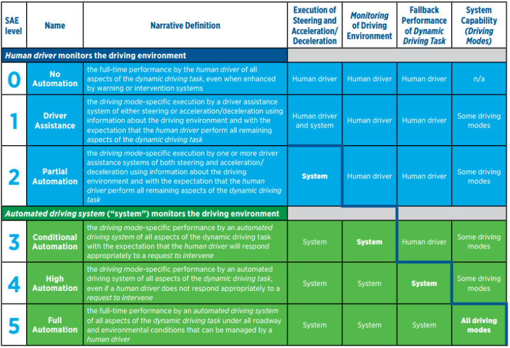
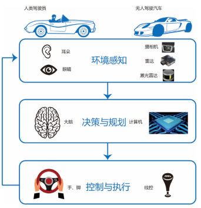
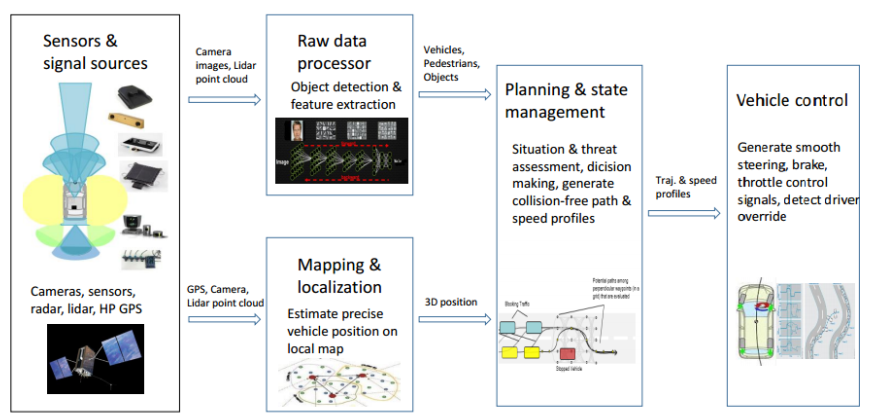
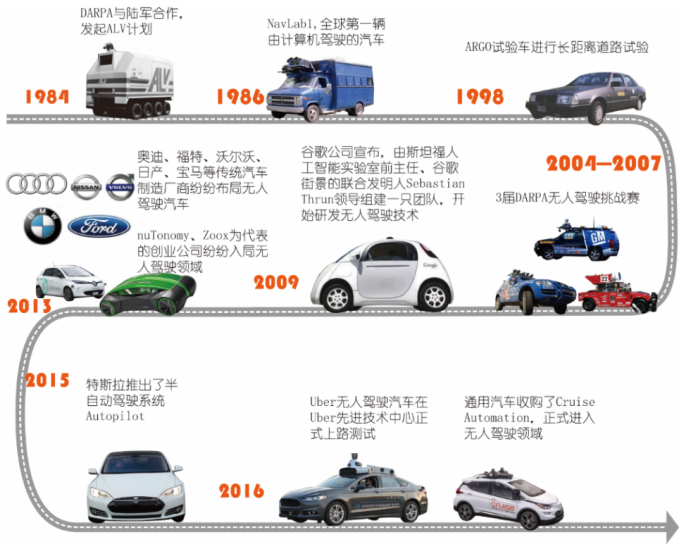
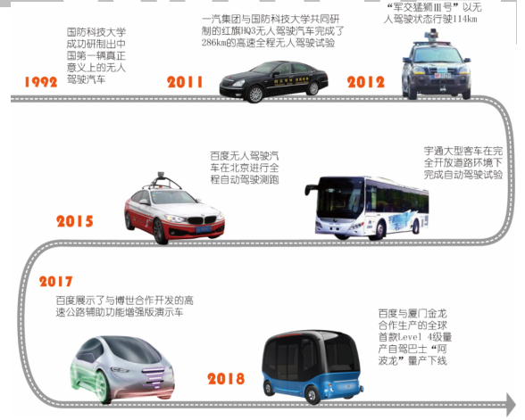
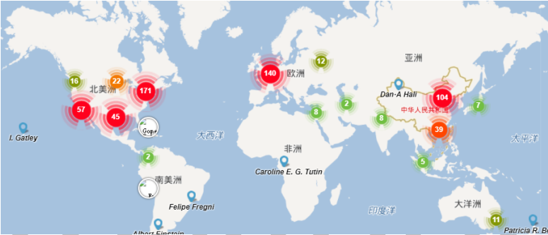
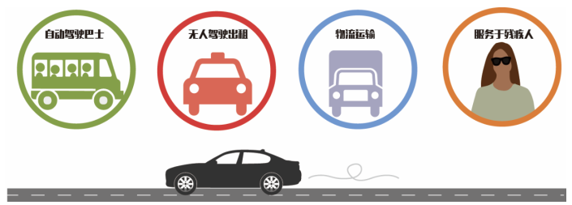

无人驾驶全景（Self-driving）
by Jianan, 2019.01. 本文以Aminer报告为模板，进行了适当增删和修改。仅供个人参考，禁止用于商业用途。
第一章
自动驾驶汽车等级标准

通常大家谈论的无人驾驶汽车对应该标准的 Level 4 和 Level 5 级。
在中国， 与无人驾驶汽车这个术语相关的概念还有智能汽车。相对于无人驾驶汽车概念，智能汽车定义涵盖的范围更广。《中国制造 2025》 中将智能网联汽车定义为搭载先进的车载传感器、控制器、执行器等装置，并融合现代通信与网络技术，实现车内网、车外网、车际网的无缝链接，具备信息共享、复杂环境感知、智能化决策、自动化协同等控制功能，与智能公路和辅助设施组成的智能出行系统。
无人驾驶技术框图


自动驾驶技术的价值

无人驾驶发展图谱

- DARPA 于 2004 年—2007 年共举办了 3 届DARPA 无人驾驶挑战赛
- 20 世纪 80 年代开始，美国卡内基·梅隆大学研制的 NavLab 系列智能车辆最具有代表性
- 1998 年意大利汽车百年行活动中， ARGO 试验车沿着意大利的高速公路网进行了 2000km 长的距离
- 2015 年 10 月，特斯拉推出的半自动驾驶系统 Autopilot， Autopilot 是第一个投入商用的自动驾驶技术。其自动驾驶功能可通过 OTA(空中下载)进行从 Level 2 到 Level 4+的软件升级
- 2016 年， 通用汽车收购了自动驾驶技术创业公司 Cruise Automation，正式进入无人驾驶领域。2018 年1 月， 作为通用汽车旗下自动驾驶部门的 Cruise Automation 发布了新一代(第四代)无人驾驶汽车——Cruise AV。 Cruise AV 没有方向盘、油门踏板和刹车踏板， 安装了 21 个普通雷达、 16 个摄像机和 5 个激光雷达来感知车辆周围的环境和障碍物， 是真正的无人驾驶汽车。
- 2016 年 5 月， Uber 无人驾驶汽车在位于美国宾夕法尼亚州匹兹堡市的 Uber 先进技术中心正式上路测试
- nuTonomy 是一家于 2013 年从麻省理工学院分离出来的创业公司。 2016 年 8 月， 它成为了新加坡第一家在试点项目下推出自动驾驶出租车的公司
- 2016 年 12 月， 谷歌将无人驾驶业务独立出来，成立了独立公司——Waymo。 自 2017年 10 月， Google Waymo 已在美国凤凰城 Chandler 镇 100 平方英里范围内，对 600 辆克莱斯勒插电式混合动力 Level 4 级自动驾驶汽车进行社会公测
- 2018 新款奥迪 A8 是全球首款量产搭载 Level 3 级别的自动驾驶系统的车型， 其携带有 12 个超声波传感器、 5 个摄像机、 5 个毫米波雷达、 1 个激光雷达、 1 个红外线摄像机共 24 个车载传感器， 可以在60km/h 以下车速时实现 Level 3 级自动驾驶
中国无人驾驶发展图谱

- 百度公司于 2013 年开始了百度无人驾驶汽车项目，其技术核心是“百度汽车大脑”，包括高精度地图、定位、感知、智能决策与控制四大模块
- 2018 年 7 月 4 日， 百度在第二届百度 AI 开发者大会(Baidu Create 2018) 上宣布，与厦门金龙合作生产的首款 Level 4 级自驾巴士“阿波龙” 已经量产下线
第二章
环境感知
- 摄像机：摄像机按照芯片类型可分为 CCD 摄像机和 CMOS 摄像机两种。
- CCD 摄像机， 由光学镜头、时序及同步信号发生器、垂直驱动器及模拟/数字信号处理电路组成，具有体积小、重量轻、 低功耗、无滞后、无灼伤、低电压等特点。
- CMOS 摄像机， 集光敏元阵列、图像信号放大器、信号读取电路、模数转换电路、图像信号处理器及控制器于一体， 具有传输速率高、动态范围宽、局部像素的可编程随机访问等优点。
- 激光雷达：根据探测原理，激光雷达分为单线(二维)激光雷达和多线(三维)激光雷达
- 单线激光雷达， 通过发出一束激光扫描线对区域进行旋转扫描， 并根据区域内各个点与激光雷达的相对空间距离与方位， 返回测量值。
- 多线激光雷达， 通过发出两束或两束以上的激光扫描线对区域进行旋转扫扫描。 多线激光雷达能够检测目标的空间距离与方位，并可以通过点云来描述三维环境模型，可以提供目标的激光反射强度信息，提供被检测目标的详细形状描述。
- 国际市场上推出的主要有 4 线、 8 线、 16 线、 32 线和 64 线。 激光雷达发出的线束越多，每秒采集的点云越多，同时造价也越高。例如， 美国 Velodyne 公司的 16 线激光雷达 VLP-16(Puck) 目前售价是 3999 美元，而 64 线激光雷达 HDL-64E 的售价高达 7 万美元 。
- 激光雷达的技术门槛和成本较高。 目前，激光雷达已经发展了三代产品，包括第一代机械扫描激光雷达、 第二代混合固态激光雷达以及第三代纯固态激光雷达。 第三代纯固态激光雷达可以使激光雷达的成本大幅度降低，使激光雷达在自动驾驶汽车上的应用能够普及 。
- 毫米波雷达 ：是指工作在毫米波波段。 频率在 30—300GHz 之间的雷达。 根据测量原理的不同， 毫米波雷达可分为脉冲方式毫米波雷达和调频连续波方式毫米波雷达两种
- 脉冲方式毫米波雷达，其基本原理与激光雷达相似， 它在硬件结构上比较复杂、成本较高，很少用于自动驾驶汽车， 目前大多数车载毫米波雷达都采用调频连续波方式。
- 调频连续波方式毫米波雷达，具有结构简单、 体积小、 成本低廉，容易实现近距离探测。毫米波雷达具有全天候、 探测距离远、价格便宜、 质量轻、 体积小等优点，能够较精确得到目标的相对距离和相对速度。 不足之处是分辨率低， 在很多场合易受干扰。
- 超声波传感器 利用超声波的特性研制而成的， 工作在机械波波段，工作频率在 20kHz以上。超声波雷达的数据处理简单快速，检测距离较短，多用于近距离障碍物检测。超声波具有频率高、波长短、绕射现象小、 方向性好、能够成为射线而定向传播等优点。超声波雷达的不足在于距离信息不精准， 一般用于精度要求不高的地方， 如倒车雷达等。
- 环境感知技术有两种技术路线， 一种是以摄像机为主导的多传感器融合方案， 典型代表是特斯拉。另一种是以激光雷达为主导，其他传感器为辅助的技术方案， 典型企业代表如谷歌、百度等。 前面介绍激光雷达的时候提到， 随着第三代纯固态激光雷达产品即将量产面世， 特别是成本的大幅降低， 激光雷达在自动驾驶汽车上的应用将更加普及。 当前业界有许多讨论是围绕着是否可以使用成本较低的摄像机去承担更多的环境感知任务 。
定位系统
-
惯性导航系统 惯性导航系统由陀螺仪和加速度计构成，通过测量运动载体的线加速度和角速率数据，并将这些数据对时间进行积分运算，从而得到速度、位置和姿态。 惯性导航系统以牛顿力学定律为基础，工作原理是根据陀螺仪的输出建立导航坐标系并给出姿态角，再根据加速度计的输出解算出运动载体的速度和位置，实现惯性参考系到导航坐标系的转换。惯导属于推算导航方式，即在已知基准点位置的前提下根据连续观测推算出下一点的位置，因而可连续测出运动载体的当前位置。
-
轮速编码器与航迹推算
可以通过轮速编码器推算出自动驾驶汽车的位置。 通常轮速编码器安装在汽车的前轮，分别记录左轮与右轮的总转数。通过分析每个时间段里左右轮的转数， 可以推算出车辆向前走了多远，向左右转了多少度等。 由于在不同地面材质(如冰面与水泥地)上转数对距离转换存在偏差，随着时间推进，测量偏差会越来越大，因此单靠轮测距器并不能精准估计自动驾驶汽车的位姿。
-
卫星导航系统
- GPS 是由美国国防部研制的全球首个定位导航服务系统，空间段由平均分布在 6 个轨道面上的 24 颗导航卫星组成，采用 WGS-84 坐标系。
- GLONASS 由苏联在 1976 年启动建设，正式组网比 GPS 还早。 苏联解体后， GLONASS由俄罗斯负责运营。 空间段由 27 颗工作星和 3 颗备份星组成， 27 颗星均匀地分布在 3 个近圆形的轨道平面上。
- 北斗卫星导航系统是中国自主研发、独立运行的全球卫星定位与通信系统，空间段包括5 颗静止轨道卫星和 30 颗非静止轨道卫星，采用中国独自建立使用的 CGCS 2000 坐标系。
- SLAM
- SLAM(Simultaneous Localization And Mapping， 即时定位与地图构建)， 也称为 CML (Concurrent Mapping and Localization， 并发建图与定位)。 SLAM 最早由 Smith、 Self 和Cheeseman 于 1988 年提出。 SLAM 起源于机器人领域， SLAM 问题可以描述为：机器人在未知环境中开始启动，并尝试从一个未知位置开始移动，在移动过程中根据自身位姿估计和地图匹配进行自身定位。然后在自身定位的基础上实现运动中拓展地图，最终实现全局机器人的自主定位和导航。目前主流有两种 SLAM 策略。
- 第一种是基于激光雷达的 SLAM， 以谷歌汽车为例。车辆携带有 GPS，通过 GPS 对位置进行判断，并以激光雷达 SLAM 点云图像与高精度地图进行坐标配准， 匹配后确认自身位姿。
- 第二种是基于视觉的 SLAM， 以 Mobileye 为例。 Mobileye 提出一种无需 SLAM 的定位方法——REM。 车辆通过采集包括信号灯、 指示牌等标识，得到了一个简单的三维坐标数据，再通过视觉识别车道线等信息，获取一个一维数据。摄像机中的图像与 REM 地图中进行配准，即可完成定位 。
决策和规划
自动驾驶汽车的行为决策与路径规划是指依据环境感知和导航子系统输出信息，通过一些特定的约束条件如无碰撞、 安全到达终点等，规划出给定起止点之间多条可选安全路径，并在这些路径中选取一条最优的路径作为车辆行驶轨迹。通常情况下， 自动驾驶汽车的决策与规划系统主要包含以下两项内容：
- 路径规划： 即路径局部规划， 自动驾驶车辆中的路径规划算法会在行驶任务设定之后将完成任务的最佳路径选取出来，避免碰撞和保持安全距离。 在此过程中， 会对路径的曲率和弧长等进行综合考量， 从而实现路径选择的最优化。
- 驾驶任务规划： 即全局路径规划，主要的规划内容是指行驶路径范围的规划。 当自动驾驶汽车上路行驶时， 驾驶任务规划会为汽车的自主驾驶提供方向引导方面的行为决策方案，通过 GPS 技术进行即将需要前进行驶的路段和途径区域的规划与顺序排列。目前， 自动驾驶汽车主要使用的行为决策算法有以下 3 种：
- 基于神经网络： 自动驾驶汽车的决策系统主要采用神经网络确定具体的场景并做出适当的行为决策。
- 基于规则：工程师想出所有可能的“if-then 规则” 的组合，然后再用基于规则的技术路线对汽车的决策系统进行编程。
- 混合路线： 结合了以上两种决策方式，通过集中性神经网络优化，通过“if-then 规则”完善。 混合路线是最流行的技术路线。
自动驾驶芯片
市场上采用的自动驾驶主流芯片主要分为两种， 一种是英特尔-Mobileye 开发的Mobileye® EyeQX™系列车载计算平台。 另一种是英伟达提供的 NVIDIA Drive PX 系列车载计算平台。
控制与执行
- 纵向控制：电机-发动机-传动模型、汽车运行模型和刹车过程模型与不同的控制算法相结合，构成了各种各样 的纵向控制模式 。
- 横向控制：
- 基于驾驶员模拟的方法：一种是使用较简单的动力学模型和驾驶员操纵规则设计控制器；另一种是用驾驶员操纵过程的数据训练控制器获取控制算法。
- 基于车辆动力学模型的方法：需要建立较精确的汽车横向运动模型。典型模型如单轨模型， 该模型认为汽车左右两侧特性相同 。
- 控制中心：主要包括电子控制单元(ECU)和通信总线两部分。 ECU 主要用来实现控制算法，通信总线主要用来实现 ECU与机械部件间的通信功能 ：
- ECU： 又称“行车电脑”“车载电脑” 等， 从用途上讲则是汽车专用微机控制器，也叫汽车专用单片机。它和普通的单片机一样，由微处理器(CPU)、 存储器(ROM、 RAM)、输入/输出接口(I/O)、 模数转换器(A/D)以及整形、 驱动等大规模集成电路组成 。
- 通信总线：目前，车用总线技术被国际自动机工程师学会(SAE) 下的汽车网络委员会按照协议特性分为 A、 B、 C、 D 共 4 类：
- A 类面向传感器或执行器管理的低速网络，它的位传输速率通常小于 20Kb/s，以 LIN 规范为代表；
- B 类面向独立控制模块间信息共享的中速网络，位传输速率一般在 10~125Kb/s，以 CAN 为代表；
- C 类总线面向闭环实时控制的多路传输高速网络，位传输速率一般在 125Kb/s ~1Mb/s；
- D 类总线面向多媒体设备、高速数据流传输的高性能网络，位传输速率一般在 2Mb/s 以上 。
高精地图
高精地图拥有精确的车辆位置信息和丰富的道路元素数据信息，起到构建类似于人脑对于空间的整体记忆与认知的功能，可以帮助汽车预知路面复杂信息，如坡度、曲率、航向等，更好地规避潜在的风险， 是自动驾驶汽车的核心技术之一。
- 高精地图相比服务于 GPS 导航系统的传统地图而言，最显著的特征是其表征路面特征的精准性。传统地图只需要做到米量级的精度就可以实现基于 GPS 的导航，而高精地图需要至少十倍以上的精度， 即达到厘米级的精度才能保证自动驾驶汽车行驶的安全。
- 同时，高精地图还需要有比传统地图更高的实时性。由于道路路网经常会发生变化，如道路整修、 标识线磨损或重漆、交通标识改变等。这些改变都要及时反映在高精地图上，以确保自动驾驶汽车的行车安全。
车联网 V2X
V2X 表示 Vehicle to X， 其中 X 表示基础设施(Infrastructure)、车辆(Vehicle)、 行人(Pedestrian)、 道路(Road)等。 V2X 网联通信集成了 V2N、 V2V、 V2I 和 V2P 共四类关健技术。
- V2N(Vehicle to Network，车-互联网)，通过网络将车辆连接到云服务器，能够使用云服务器上的娱乐、导航等功能。
- V2V(Vehicle to Vehicle，车-车)，指不同车辆之间的信息互通。
- V2I(Vehicle to Infrastructure，车-基础设施)，包括车辆与路障、道路、 交通灯等设施之间的通信，用于获取路障位置、 交通灯信号时序等道路管理信息。
- V2P(Vehicle to Pedestrian，车-行人)，指车辆与行人或非机动车之间的交互，主要是提供安全警告。
2010 年美国颁布了以 IEEE 802.11P 作为底层通信协议和 IEEE 1609 系列规范作为高层通信协议的 V2X 网联通信标准。 2015 年中国开始相关的研究工作， 2016 年国家无线电委员会确定了中国的 V2X 专用频谱。 2016 年 6月， V2X 技术测试作为第一家“国家智能网联汽车试点示范区” 及封闭测试区的重点布置场景之一。 2017 年 9月，《合作式智能交通系统车用通信系统应用层及应用数据交互标准》正式发布。
V2X 技术的实现一般基于 RFID、拍照设备、车载传感器等硬件平台。 V2X 网联通信产业分为 DSRC 和 LTE-V2X 两个标准和产业阵营。
测试与验证技术
- 实测: 让车辆行驶数百万公里，以确定设计的系统是否安全并按照预期运行。该方法的困难在于必须累积的测试里程数，这可能要花费大量的时间。
- 软件在环或模型在环仿真: 另一种更可行的方法是将现实世界的测试与仿真相结合。在仿真软件所构建的各种场景中，通过算法控制车辆进行相应的应对操作， 来证明所设计的系统确实可以在各种场景下做出正确的决定， 这可以大大减少必须完成的测试里程数。
- 硬件在环仿真: 为了验证真实硬件的运行情况， 硬件在环仿真可以对其进行测试，并将预先记录的传感器数据提供给系统，此种技术路线可以降低车辆测试和验证的成本 。
AI在环境感知中的应用
环境感知包括： 可行驶路面检测、 车道线检测、 路缘检测、 护栏检测、 行人检测、 机动车检测、 非机动车检测、 路标检测、 交通标志检测、 交通信号灯检测等。 对于如此复杂的路况检测， 深度学习能够满足视觉感知的高精度需求。 基于深度学习的计算机视觉，可获得较接近于人的感知能力。 有研究报告指出深度学习在算法和样本量足够的情况下，视觉感知的准确率可以达到 99.9%以上，而传统视觉算法的检测精度极限在 93%左右， 人感知的准确率一般是 95%左右。
深度学习按照模型的不同可以分为 CNN、 RNN、 LSTM、 DBN 和 Autoencoder 等 5 种类型，其中 CNN（卷积神经网络） 在处理图像和视频上拥有很好的效果。深度学习一般包括输入层、卷积层、池化层、输出层等 4 种类型的神经网络层。网络的结构可以 10 层甚至上百层，一般层数越多检测精度越精准。随着网络层数和节点数的增加，可以表达更细、更多的识别物的特征， 为检测精度的提高奠定基础。 其中， 卷积层和池化层是深度学习的核心处理层： 卷积层主要是用于负责物体特征的提取， 池化层主要是负责采样。
深度学习的工作一般可以分为两部分，即训练和测试。训练一般是将采集到的样本输入到线下的训练网络中，训练网络进行前向输出，调整参数让输出误差在接受范围内从而得到模型。将训练好的模型进行测试和性能评估。测试时网络可以对输入的图像和视频等进行检测和识别。通常情况下，样本的数量越多，识别的精度越高，所以样本的数量是影响深度学习精度重要的一个因素。 由此可见，深度学习需要大数据平台提供支撑。
AI在决策规划中的应用
行为决策与路径规划是人工智能在自动驾驶汽车领域中的另一个重要应用。前期决策树、贝叶斯网络等人工智能方法已有大量应用。 近年来兴起的深度卷积神经网络与深度强化学习， 能通过大量学习实现对复杂工况的决策，并能进行在线学习优化，由于需要较多的计算资源，当前是计算机与互联网领域研究自动驾驶汽车的决策与规划处理的热门技术。
随着深度强化学习的兴起，越来越多的公司和研究者把强化学习应用到无人车的行为与决策中，并取得了不错的效果。 Mobileye 公司是其中的典型代表，根据其最新发表的论文，其设计的车辆模型已经能自如地应对一些复杂的交通任务， 如双向通道变线、复杂十字路口等场景。 Mobileye 将行为决策分解成两个部分，可学习部分和不可学习部分，可学习部分是由强化学习来决策行驶需要的高级策略，不可学习部分则是按照这些策略利用动态规划来实施具体的路径规划。
可学习部分是将无人车所处的环境映射成一系列抽象策略的过程。他们设计了一张策略选项图，主要包含无人车的加减速、转向以及对周围车辆的反应，并利用策略网络来选择合适的应对选项。其中，策略网络在给定的车辆环境下， 评估每一种应对的可能影响，从而选择最合适的策略。不可学习部分则是将学习到的抽象策略转化成对车辆的实际控制动作。该部分主要对车辆动作进行具体规划，检查抽象策略是否可执行，或者执行满足策略的动作，从而充分保证系统的安全性。
AI在车辆控制中的应用
相对于传统的车辆控制方法，智能控制方法主要体现在对控制对象模型的运用和综合信息学习运用上， 包括神经网络控制和深度学习方法等，这些算法已逐步在车辆控制中广泛应用。
神经控制， 是研究和利用人脑的某些结构机理以及人的知识和经验对系统的控制。利用神经网络，可以把控制问题看成模式识别问题，被识别的模式映射成“行为”信号的“变化”信号。神经控制最显著的特点是具有学习能力。它是通过不断修正神经元之间的连接权值，并离散存储在连接网络中来实现的。它对非线性系统和难以建模的系统的控制具有良好效果。
深度神经网络学习， 源于神经网络的研究，可理解为深层的神经网络。通过它可以获得深层次的特征表示，免除人工选取特征的繁复冗杂和高维数据的维度灾难问题。深度学习在特征提取与模型拟合方面显示了其潜力和优势。对于存在高维数据的控制系统，引入深度学习具有一定的意义。 自动驾驶系统需要尽量减少人的参与或者没有人的参与，深度学习自动学习状态特征的能力使得深度学习在自动驾驶系统的研究中具有先天的优势。深度强化学习， 强化学习的灵感来源于生物学中的动物行为训练，训练员通过奖励与惩罚的方式让动物学会一种行为与状态之间的某种联系规则。强化学习就是要解决这类问题：一个能够感知环境的智能体怎样通过学习选择达到其目标的最优动作。
第三章
人才分布

按国家进行统计来看美国是自动驾驶汽车科技发展的核心。中国的人数紧排在美国之后。其他的专家主要分布在英国、 加拿大、 德国和意大利。
自动驾驶技术领域的国内代表性研究学者包括贺汉根、 李德毅、杨静宇、郑南宁等， 国外包括 Sebastian Thrun、 Chris Urmson、 Elon Musk、 Amnon Shashua 等。
应用

趋势
据《日本经济新闻》 5 月 18 日报道，欧盟的欧洲委员会当地时间 5 月 17 日公布的自动驾驶时间进度表指出， 计划
- 到 2020 年在高速公路上实现自动驾驶，在城市中心区域实现低速自动驾驶；到 2030 年普及完全自动驾驶。为了助力自动驾驶；
- 到 2022 年，欧盟所有新车都将具备通信功能，实现 100％“车联网” 。 委员会呼吁成员国和汽车企业制定确保安全和明确事故责任的通用规则。力争在国际规则出台之前制定出地区标准，在新一代产业领域掌握主导权。
此前， 中国发布的《节能与新能源汽车技术路线图》指出，
- 到 2020 年，驾驶辅助/部分自动驾驶车辆市场占有率将达 50％；
- 到 2025 年，高度自动驾驶车辆市场占有率将达约 15％；
- 到 2030 年，完全自动驾驶车辆市场占有率将近 10％。
目前， 各大自动驾驶技术研发企业与传统汽车制造厂商均在努力加速实现自动驾驶汽车的商业化进程。百度计划 2020 年实现自动驾驶汽车的全面量产； 宝马计划 2021 年推出完全自动驾驶汽车； 福特计划在 2021 年推出自动驾驶汽车； 戴姆勒称，普通道路上实现自动驾驶的卡车将在 2020 年研发成功。
到 2020 年， 过去积累的自动驾驶技术科研成果及工程进步都将成为现实。 我们即将进入 10~20 年混合模式的时代。 随着人工智能的飞速发展及自动驾驶汽车与新技术的深度融合， 自动驾驶汽车可实现高度智能化， 真正实现 Level 4+级的自动驾驶技术。在享受科技成果时，我们也需认识到， 自动驾驶技术给我们带来无限憧憬的同时，也会给社会生活带来巨大的冲击， 如汽车驾照与保险可能会消失，出租车可能不再需要“的哥” 等 。
挑战
- 技术问题
目前自动驾驶技术在“人不多、 规定车道、车速不快” 的前提条件下确实可以实现， 但是面对真正的复杂交通环境， 自动驾驶汽车的安全性还需要更长时间来完善。 如人类驾驶员能判断前方车辆的驾驶员是老司机还是新手，从而决定与前车保持多远的距离才合适， 而自动驾驶技术要理解这些细微的预行为就显得很困难。
- 精确定位和导航是实现自动驾驶最为重要的部分之一，只有实现精确定位和导航的精细化才能保证自动驾驶的安全性与可靠性。目前， 我国自主研制的北斗导航系统在性能上与美国的 GPS 相比还存在一定的差距。
- 高精度激光雷达、毫米波雷达等车载传感器作为自动驾驶汽车的眼睛，国内近几年虽有快速的进步，但与国外先进水平相比仍有相当的差距。 自动驾驶技术要大规模普及，一方面有待在低成本、高性能的传感技术方面取得突破，还需要大幅提升自动驾驶的计算能力， 而这两方面都是国内仍需努力的。
- 政策法规 自动驾驶汽车要想合法上路行驶，首先要解决政策法规的问题。 自动驾驶汽车实际行驶过程中难免会因为某些原因而产生事故，如何划分事故责任，如何做到公正裁决等这些都是要进行深入讨论与验证的问题。目前并没有哪些国家对自动驾驶汽车专门制定完善的政策法规，要想真正的实现自动驾驶汽车的普及化，这是一个必须解决并且需要格外小心的问题。
- 困难和挑战 自动驾驶的一个很重要的用途是用于某些特殊的环境下，由于在某些特殊的环境下，人员生存困难， 自动驾驶能克服这些问题，但是其也要解决如极寒、道路条件复杂等各种极端环境的影响，这同样也是自动驾驶未来发展所应面临的困难。由于人工智能的大量应用， 自动驾驶技术更依赖于网络，如通过云端获取的高精地图、精准导航等的数据，其安全性显得尤为突出。 如何打造安全可靠的数据链路，不被黑客侵扰等也将是需要长期面临的困难与挑战 。
版权声明
本总结以“自动驾驶与人工智能研究报告（前沿版）AMiner 研究报告第七期” 为模板进行了部分增删和修改，原文来源于此。仅供个人参阅，禁止用于商业用途。
参考文献
- SAE International.Automated Driving - Levels of Driving Automation are Defined in NewSAE International Standard J3016.
- 陈虹，郭露露，边宁.对汽车智能化进程及其关键技术的思考［J］ .科技导报， 2017， 35（11）： 52-59.
- 陈慧岩，熊光明， 龚建伟，等.无人驾驶汽车概论.北京： 北京理工大学出版社， 2014.
- 刘少山， 唐洁，吴双，等.第一本无人驾驶技术书.北京： 电子工业出版社， 2017.
- 国家制造强国建设战略咨询委员会.《中国制造 2025》 .2015.
- Wolfgang Bernhart， Marc WinTerhoff， Christopher Hoyes， etc.Autonomous Driving.Roland
- Berger， 2014， 11.
- 班智飞， 黄波.无人驾驶： 在腾飞的前夜.中关村， 2018， 1.
- 乔维高， 徐学进.无人驾驶汽车的发展现状及方向[J].上海汽车， 2007(07).
- 晏欣炜，朱政泽，周奎，彭彬.人工智能在汽车自动驾驶系统中的应用分析.湖北汽车工业学院学报.2018， 3.
- 夏伟， 李慧云.基于深度强化学习的自动驾驶策略学习方法.集成技术， 2017， 5.
- 国家发展改革委办公厅.智能汽车关键技术产业化实施方案.2017， 12.
- 李克强，戴一凡，李升波，等.智能网联汽车（ICV）技术的发展现状及趋势[J].汽车安全与节能学报， 2017， 8（1）： 1-14.
- 丁毅.浅析无人驾驶汽车环境感知技术.数字技术与应用， 2018， 1.
- 贺汉根， 孙振平， 徐昕.智能交通条件下车辆自主驾驶技术展望.中国科学基金会， 2016.
- 陈帅.无人驾驶汽车安全行驶的三大系统.中小企业管理与科技， 2018， 4